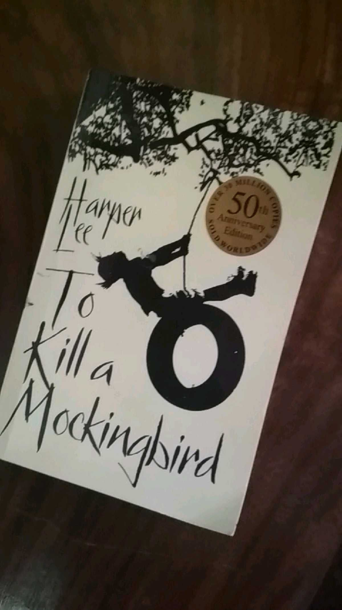
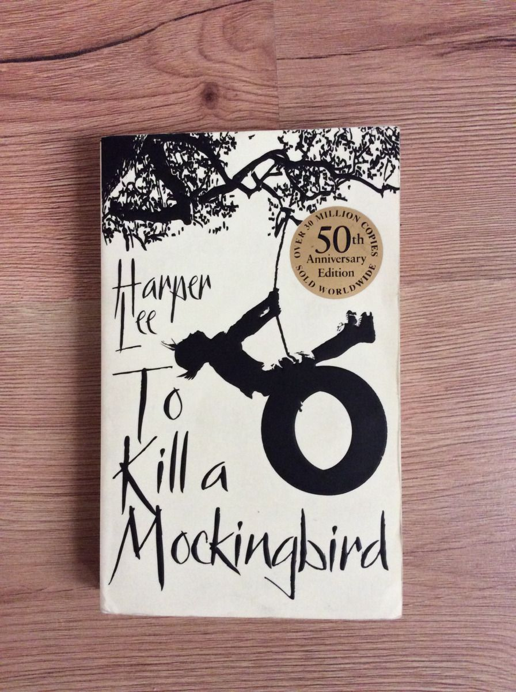
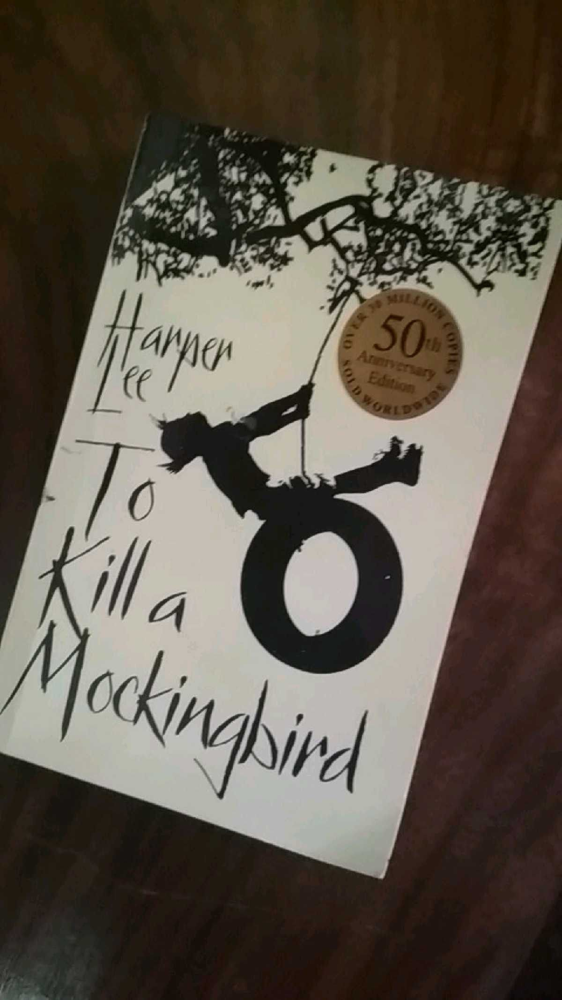
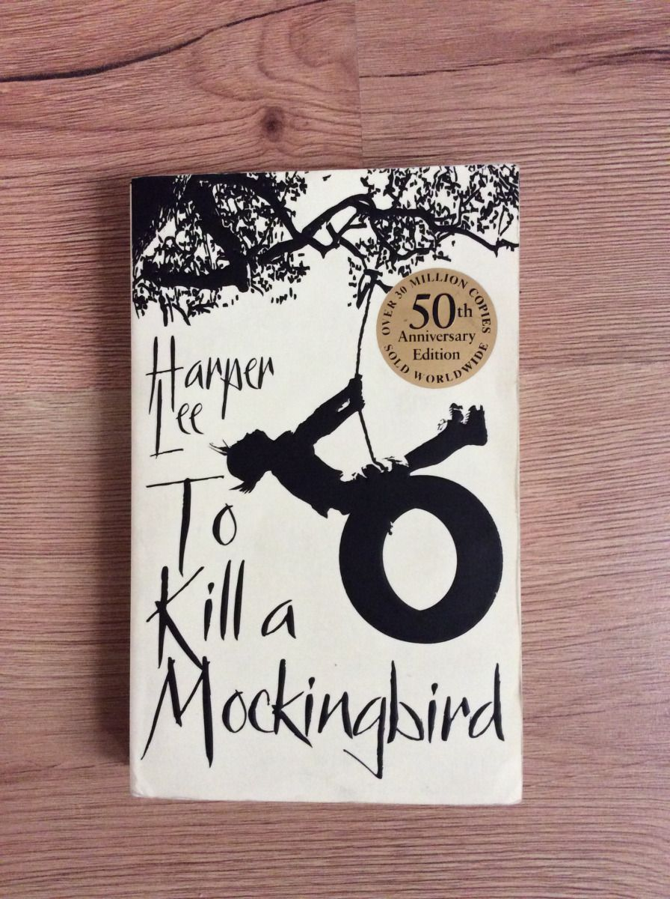

To Kill a Mockingbird is a novel by the American author Harper Lee. It was published in 1960 and was instantly successful. In the United States, it is widely read in high schools and middle schools. To Kill a Mockingbird has become a classic of modern American literature, winning the Pulitzer Prize. The plot and characters are loosely based on Lee's observations of her family, her neighbors and an event that occurred near her hometown of Monroeville, Alabama, in 1936, when she was ten.
Despite dealing with the serious issues of rape and racial inequality, the novel is renowned for its warmth and humor. Atticus Finch, the narrator's father, has served as a moral hero for many readers and as a model of integrity for lawyers. The historian Joseph Crespino explains, "In the twentieth century, To Kill a Mockingbird is probably the most widely read book dealing with race in America, and its main character, Atticus Finch, the most enduring fictional image of racial heroism."[1] As a Southern Gothic novel and Bildungsroman, the primary themes of To Kill a Mockingbird involve racial injustice and the destruction of innocence. Scholars have noted that Lee also addresses issues of class, courage, compassion, and gender roles in the Deep South. The book is widely taught in schools in the United States with lessons that emphasize tolerance and decry prejudice.[2] Despite its themes, To Kill a Mockingbird has been subject to campaigns for removal from public classrooms, often challenged for its use of racial epithets. In 2006, British librarians ranked the book ahead of the Bible as one "every adult should read before they die".[3]
Reaction to the novel varied widely upon publication. Despite the number of copies sold and its widespread use in education, literary analysis of it is sparse. Author Mary McDonough Murphy, who collected individual impressions of To Kill a Mockingbird by several authors and public figures, calls the book "an astonishing phenomenon".[4] It was adapted into an Academy Award-winning film in 1962 by director Robert Mulligan, with a screenplay by Horton Foote. Since 1990, a play based on the novel has been performed annually in Harper Lee's hometown.
To Kill a Mockingbird was Lee's only published book until Go Set a Watchman, an earlier draft of To Kill a Mockingbird, was published on July 14, 2015. Lee continued to respond to her work's impact until her death in February 2016, although she had refused any personal publicity for herself or the novel since 1964.

 


